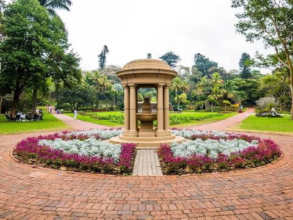
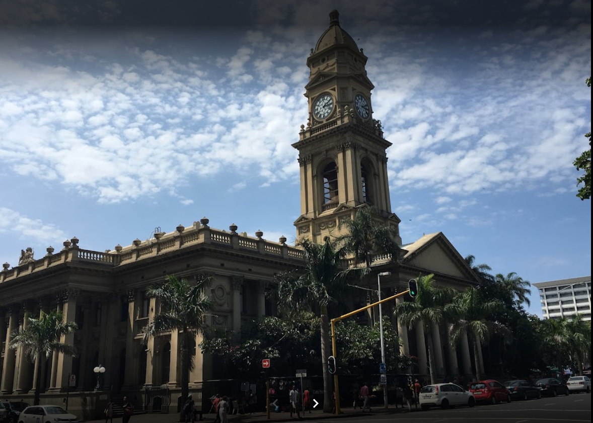

Mxolisi Tshezi

Which City?
Tokyo
 Tokyo is the city I'd like to visit one day.
As a techsavvy person I'd love to walk aorund the world leader city in innovation for decades,
Tokyo has often been cited as the world's most advanced city for technology.
In fact, Tokyo is home to many recognizable names in consumer and professional-grade electronics. For
example, Sony, Nikon, Canon, Hitachi, Toshiba and Panasonic are headquartered here
Tokyo is the city I'd like to visit one day.
As a techsavvy person I'd love to walk aorund the world leader city in innovation for decades,
Tokyo has often been cited as the world's most advanced city for technology.
In fact, Tokyo is home to many recognizable names in consumer and professional-grade electronics. For
example, Sony, Nikon, Canon, Hitachi, Toshiba and Panasonic are headquartered here
Foreign Language
Spanish is the Language I'd to learn one day,It is spoken in one of the countries that I'd love to go one day. I want communicate with Spanish people when I get there.Also Spanish is the second most commonly spoken language after Mandarin and certainly not a surprise at the top of languages to learn
| English | Spanish | Hi | Hola |
|---|---|
| I am new here | Soy nuevo aqui | I love this city | me gusta este idioma |
Historic Places in Durban
Durban Botanic Gardens
The Durban Botanic Gardens is the oldest surviving Botanic Garden since 1849. It is the national and local city city asset actively contributing to plant conversation and plant-based education.The Gardens boasts a beautiful old indigenous tree: Ziziphus muconata [Buffalo Thorn / uMphafa].
Umngeni River Bird Park

The park is situated in 3.5 hectares of lush tropical landscaping and houses an ever-increasing collection of more than 800 birds from 200 species Some species are the only representatives of their kind in Africa Set in a landfilled and landscaped former quarry, the park includes several natural waterfalls
The Durban Central Post Office
This was the first town hall; the foundation stone was laid in 1883 and it was used as the Town Hall from 1885 to 1910 when the new Durban Town Hall, just across the road, came into use. here’s a plaque on the wall stating that “in this building the National Convention which led to the Union of South Africa held its first sittings from the 12th October 1908 to the 5th November 1908.”. Another historical event that this building is known for is that “following his escape from Pretoria in December 1899, Winston Churchill delivered a speech from the steps of the Town Hall to the excited citizens of Durban”
.